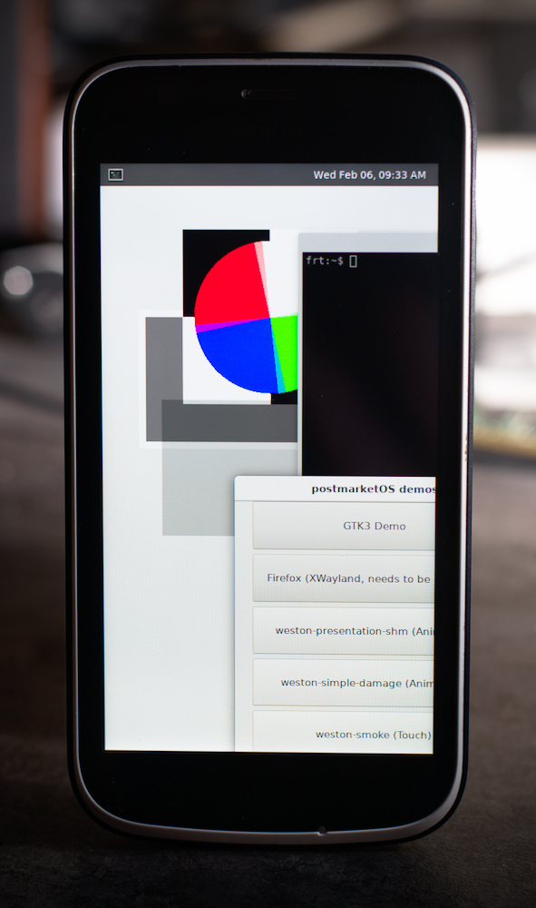

HMD Global Nokia 1 (nokia-frt)
| This device is still running on armv7, although the processor supports aarch64. If you own it, change it and test it that way. |
|
 cute little phone | |
| Manufacturer | HMD Global |
|---|---|
| Name | Nokia 1 |
| Codename | nokia-frt |
| Model | TA-1047 |
| Released | 2018 |
| Type | handset |
| Hardware | |
| Chipset | MediaTek MT6737M |
| CPU | 4x 1.1GHz Cortex-A53 |
| GPU | Mali-T720 MP1 |
| Display | 480x854 |
| Storage | 8GB |
| Memory | 1GiB |
| Architecture | armv7 |
| Software | |
| Original software | Android (Go) |
| Original version | 8.1 (Linux 3.18.79) |
| postmarketOS | |
| Category | testing |
| Pre-built images | no |
| postmarketOS kernel | 3.18.79 |
| Unixbench Whet/Dhry score | 910.4 |
{kind=link}
| Flashing |
Works
|
|---|---|
| USB Networking |
Works
|
| Internal storage | |
| SD card | |
| Battery |
Broken
|
| Screen |
Works
|
| Touchscreen |
Works
|
| Multimedia | |
| 3D Acceleration | |
| Audio | |
| Camera | |
| Camera Flash | |
| Connectivity | |
| WiFi | |
| Bluetooth | |
| GPS | |
| NFC | |
| Modem | |
| Calls | |
| SMS | |
| Mobile data | |
| Miscellaneous | |
| FDE |
Broken
|
| USB OTG | |
| HDMI/DP | |
| Sensors | |
| Accelerometer | |
| Magnetometer | |
| Ambient Light | |
| Proximity | |
| Hall Effect | |
| Haptics | |
| Barometer | |
Contributors
Maintainer(s)
Users owning this device
- Halamix2 (Notes: lost battery, bought replacement from china)
- MartijnBraam
What works
- Flashing
- Booting
- ssh
- osk-sdl/charging-sdl
- touch
What does not work
- Everything else
- after entering pass in osk-sdl it's stuck on "loading...", see pmaports#194
- charging-sdl shows wrong percentage & crashes after few seconds on (!!!) *** UNIMPLEMENTED [fusion_get_fusionee_pid] *** [fusion.c:4147]
Current progress
Downstream kernel
There are official sources for 3.18, The CPU itself is aarch64 but the kernel was made for arm(v7) mode.
CPU cores are hotplugged, Unixbench score may be lowered since cores are enabled/disabled depending on load.
Upstream kernel
Doesn't exist yet, dts files for the phone are available in downstream kernel
/dev/input/event*
evtest return 3 devices:
- /dev/input/event0: ACCDET
- Detect audio jack state and button presses on headphones
Input device name: "ACCDET"
Supported events:
Event type 0 (EV_SYN)
Event type 1 (EV_KEY)
Event code 114 (KEY_VOLUMEDOWN)
Event code 115 (KEY_VOLUMEUP)
Event code 122 (KEY_HANGUEL)
Event code 163 (KEY_NEXTSONG)
Event code 164 (KEY_PLAYPAUSE)
Event code 165 (KEY_PREVIOUSSONG)
Event code 166 (KEY_STOPCD)
Event code 231 (KEY_SEND)
Event code 582 (KEY_VOICECOMMAND)
Event type 5 (EV_SW)
Event code 2 (SW_HEADPHONE_INSERT) state 0
Event code 4 (SW_MICROPHONE_INSERT) state 0
Event code 6 (SW_LINEOUT_INSERT) state 0
Event code 7 (SW_JACK_PHYSICAL_INSERT) state 0
- /dev/input/event1: mtk-kpd
- detects KEY_VOLUMEDOWN, KEY_VOLUMEUP KEY_POWER keys state
Supported events:
Event type 0 (EV_SYN)
Event type 1 (EV_KEY)
Event code 114 (KEY_VOLUMEDOWN)
Event code 115 (KEY_VOLUMEUP)
Event code 116 (KEY_POWER)
- /dev/input/event2: mtk-tpd
- touchscreen, detects up to 4 fingers
Supported events:
Event type 0 (EV_SYN)
Event type 1 (EV_KEY)
Event code 330 (BTN_TOUCH)
Event type 3 (EV_ABS)
Event code 0 (ABS_X)
Value 0
Min 0
Max 480
Resolution 480
Event code 1 (ABS_Y)
Value 0
Min 0
Max 854
Resolution 854
Event code 24 (ABS_PRESSURE)
Value 0
Min 0
Max 255
Event code 47 (ABS_MT_SLOT)
Value 0
Min 0
Max 4
Event code 48 (ABS_MT_TOUCH_MAJOR)
Value 0
Min 0
Max 100
Event code 49 (ABS_MT_TOUCH_MINOR)
Value 0
Min 0
Max 100
Event code 53 (ABS_MT_POSITION_X)
Value 0
Min 0
Max 480
Event code 54 (ABS_MT_POSITION_Y)
Value 0
Min 0
Max 854
Event code 57 (ABS_MT_TRACKING_ID)
Value 0
Min 0
Max 10
UART
UART is 1.8V:

Output from the device
F0: 102B 0000 F3: 0000 0000 V0: 0000 0000 [0001] 00: 0000 0000 BP: 0000 0041 [0000] G0: 0190 0000 T0: 0000 0142 [000F] Jump to BL INIT: cpu 0, calling hook 0x50051bf9 (libuthread) at level 0x10000, flags 0x1 INIT: cpu 0, calling hook 0x500522f8 (libuthreadarmmmu) at level 0x10000, flags 0x3 INIT: cpu 0, calling hook 0x500463dd (tm_resume_cpu) at level 0x20000, flags 0xb welcome to lk/MP boot args 0x400000 0x43015f18 0x5c 0x0 calling constructors initializing heap INIT: cpu 0, calling hook 0x5004f355 (vm_preheap) at level 0x3ffff, flags 0x1 initializing kernel INIT: cpu 0, calling hook 0x5004f399 (vm) at level 0x50000, flags 0x1 INIT: cpu 0, calling hook 0x50040321 (bootargs_init) at level 0x50001, flags 0x1 tee_args->magic: 0x4b54444d tee_args->version: 0x1 tee_args->NWEntry: 0x0 tee_args->NWBootArgs: 0x0 tee_args->NWBootArgsSize: 0x0 tee_args->dRamBase: 0x40000000 tee_args->dRamSize: 0x102aac tee_args->secDRamBase: 0x50040000 tee_args->secDRamSize: 0x400000 tee_args->sRamBase: 0x0 tee_args->sRamSize: 0x0 tee_args->secSRamBase: 0x0 tee_args->secSRamSize: 0x0 tee_args->gicd_base: 0x10221000 tee_args->gicc_base: 0x10222000 tee_args->gic_ver: 0x0 tee_args->log_port: 0x11003000 tee_args->log_baudrate: 0xe1000 INIT: cpu 0, calling hook 0x50040579 (platform_after_vm) at level 0x50002, flags 0x1 gicc 0x10222000, gicd 0x10221000 INIT: cpu 0, calling hook 0x50042f4d (platform_after_vm_gcpu_init) at level 0x50003, flags 0x1 Enable mmap for GCPU! crypto_hw_dev_key enc/dec w/ hwkey : PASSED INIT: cpu 0, calling hook 0x500431c1 (platform_after_vm_hacc_init) at level 0x50003, flags 0x1 Enable mmap for HACC! INIT: cpu 0, calling hook 0x500432b5 (platform_after_vm_trng_init) at level 0x50003, flags 0x1 Enable mmap for HWTRNG! INIT: cpu 0, calling hook 0x5004e1c5 (platform_after_vm_hkdf_unittest) at level 0x50004, flags 0x1 HKDF-SHA256 Verification: PASS initializing mp initializing threads initializing timers creating bootstrap completion thread top of bootstrap2() creating bootstrap completion thread for cpu 1 creating bootstrap completion thread for cpu 2 creating bootstrap completion thread for cpu 3 releasing 3 secondary cpus initializing platform INIT: cpu 0, calling hook 0x50046fc5 (libsm_cpu) at level 0x8fffe, flags 0x3 INIT: cpu 0, calling hook 0x500472c9 (libsm) at level 0x8ffff, flags 0x1 initializing target calling apps_init() INIT: cpu 0, calling hook 0x50048f85 (uctx) at level 0xafffe, flags 0x1 als_slot_cnt 1 ret 1 INIT: cpu 0, calling hook 0x5004cebd (tipc_init) at level 0xafffe, flags 0x1 INIT: cpu 0, calling hook 0x50047ba5 (libtrusty) at level 0xaffff, flags 0x1 initializing trusty (Built: 08:23:48 Dec 17 2018) trusty_app: start 0x50059000 size 0x0013854c end 0x5019154c trusty_app 0 uuid: 0x766072e8 0x414e 0x48fc 0x9f8f 0xfb9a6f144124 trusty_app 1 uuid: 0xfee67f9f 0xe1b1 0x4e3d 0x8455 0x47f601afef trusty_app 2 uuid: 0xab742471 0xd6e6 0x4806 0x85f6 0x555b024f4da trusty_app 3 uuid: 0x38ba0cdc 0xdf0e 0x11e4 0x9869 0x233fb6ae4795 trusty_app 4 uuid: 0x5f902ace 0x5e5c 0x4cd8 0xae54 0x87b88c22ddaf trusty_app 5 uuid: 0xcea8706d 0x6cb4 0x49f3 0xb994 0x29e0e478bd29 trusty_app 6 uuid: 0x7445ca05 0x35d5 0x4698 0xbb9a 0xd84f9a5fcf trusty_app 0: code: start 0x00008000 end 0x00011ef4 trusty_app 0: data: start 0x00012000 end 0x00013000 trusty_app 0: bss: end 0x000123a0 trusty_app 0: brk: start 0x00013000 end 0x00017000 trusty_app 0: entry 0x0000cf2c trusty_app 1: code: start 0x00008000 end 0x0000d198 trusty_app 1: data: start 0x0000e000 end 0x00010000 trusty_app 1: bss: end 0x0000f454 trusty_app 1: brk: start 0x00010000 end 0x00014000 trusty_app 1: entry 0x00008b84 trusty_app 2: code: start 0x00008000 end 0x0000db10 trusty_app 2: data: start 0x0000e000 end 0x0000f000 trusty_app 2: bss: end 0x0000eba8 trusty_app 2: brk: start 0x0000f000 en d 0x00010000 tp 2: entry 0x000092ec trusty_app 3: code: start 0x00008000 end 0x0002cb44 trusty_app 3: data: start 0x0002d000 end 0x0002e000 trusty_app 3: bss: end 0x0002d418 trusty_app 3: brk: start 0x0002e000 end 0x00030000 trusty_app 3: entry 0x0000a4f8 trusty_app 4: code: start 0x00008000 end 0x0008e0f8 trusty_app 4: data: start 0x0008f000 end 0x00091000 trusty_app 4: bss: end 0x000909fc trusty_app 4: brk: start 0x00091000 end 0x000a9000 trusty_app 4: entry 0x00019efc trusty_app 5: code: start 0x00008000 end 0x00040818 trusty_app 5: data: start 0x00041000 end 0x00043000 trusty_app 5: bss: end 0x000428d4 trusty_app 5: brk: start 0x00043000 end 0x0006d000 trusty_app 5: entry 0x00026248 trusty_app 6: code: start 0x00008000 end 0x00032fb0 trusty_app 6: data: start 0x00033000 end 0x00034000 trusty_app 6: bss: end 0x00033508 trusty_app 6: brk: start 0x00034000 end 0x0004c000 trusty_app 6: entry 0x0001d600 INIT: cpu 0, calling hook 0x50046bb5 (memlog) at level 0xb0000, flags 0x1 INIT: cpu 0, calling hook 0x5004bab9 (trusty_smcall) at level 0xb0000, flags 0x1 Initializing Trusted OS SMC handler INIT: cpu 0, calling hook 0x5004d055 (kmgetboot_service) at level 0xb0000, flags 0x1 init_kmgetboot_ipc:569: com.mediatek.kmgetboot created INIT: cpu 0, calling hook 0x5004d469 (mtcrypto_service) at level 0xb0000, flags 0x1 INIT: cpu 0, calling hook 0x5004e485 (mtktimer_service) at level 0xb0000, flags 0x1 init_mtktimer_ipc:251: com.mediatek.mtktimer created INIT: cpu 0, calling hook 0x5004e705 (trusty_mt_smcall) at level 0xb0000, flags 0x1 Initializing MTK SMC handler INIT: cpu 0, calling hook 0x50047bc9 (libtrusty_apps) at level 0xb0001, flags 0x1 ipc-unittest-main: 1506: Welcome to IPC unittest!!! ipc-unittest-main: 1518: waiting forever ipc-unittest-srv: 329: Init unittest services!!! hwcrypto_unittest: 358: WELCOME TO HWRNG UNITTEST! hwcrypto_unittest: 269: run_hwrng_show_data_test: Dumping first hwrng request: 0xac 0xb1 0x04 0x48 0xae 0x7c 0xa6 0x95 0xad 0xd7 0x8e 0x91 0xfc 0xc0 0x60 0x03 0x50 0x8e 0x31 0xf3 0x55 0xfd 0x30 0x93 0x12 0x3a 0xa6 0x28 0xd9 0x03 0xdf 0x50 hwcrypto_unittest: 277: run_hwrng_show_data_test: PASSED hwcrypto_unittest: 286: run_hwrng_var_rng_req_test: hwcrypto_unittest: 299: run_hwrng_var_rng_req_test: PASSED hwcrypto_unittest: 312: run_hwrng_stats_test: INIT: cpu 0, calling hook 0x50040501 (disable_uart_after_bootup) at level 0xffffffff, flags 0x1 Disable UART after Trusty bootup!
How to enter flash mode
Plug in USB, press and hold power and press and hold volume down as fast as you can, then release power when you see Nokia logo.
How to enter recovery mode
Plug in USB, press and hold power and press and hold volume down as fast as you can, then release power when you see Nokia logo. "No command" should appear. Press and hold power and then press and hold Volume Up and release both buttons after screen changes.
You can scroll to bootloader using Vol up/down keys and press power to confirm.
Unlocking bootloader
See Category:Bootloaders/Unlocking/HMD_Global#MD5_Method
Installation
Follow standard Installation/Using pmbootstrap. When asked for the device's vendor/codename, select nokia as the vendor and ant as the codename.